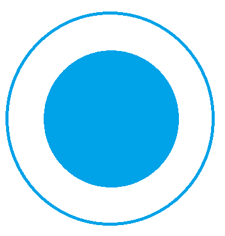
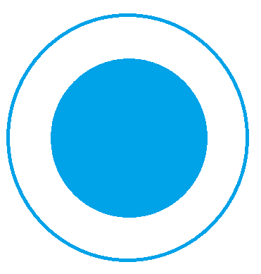
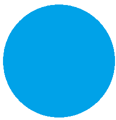

FORMATION ET COMPÉTENCES
 2020
Paris
OPENCLASSROOMS
Junior Web Developper
Maîtrise des langages HTML et CSS, apprentissage en cours de PHP. Intégration de maquettes et hébergement sur Git.
 2020
Paris
Junior Web Developper
Maîtrise des langages HTML et CSS, apprentissage en cours de PHP. Intégration de maquettes et hébergement sur Git.
2018-2020
Paris
Responsable de restaurant
Accompagne l'équipe dans ses missions quotidiennes, passe et réceptionne les commandes, valide les factures et le chiffre mensuel sous la supervision du directeur. Traite avec les différents intervenants.
 2016-2018
France Entière
Recruteur de pétitionnaires
Communique sur les programmes et pétitions en cours dans différentes villes, sensibilise le public sur les causes environnementales. Partage les principes de non-violence en toutes circonstances. En rapport avec l'équipe de campagnes, fait un bilan sur la situation.
Equipier formateur
En adéquation avec les normes d'hygiène et de service, effectue la production, la vente et le nettoyage. Forme à ces mêmes principes les nouveaux arrivants et contrôle l'application de ces règles en collaboration avec le manager référent.
Jean-Christophe Mercier
Chef du service pétition Greenpeace
Téléphone: 01 80 96 96 96
jmercier@greenpeace.org
Mickaël Speranza
Directeur du Pomme de Pain Kléber
Téléphone: 01 45 05 32 81
kleber@pommedepain.fr
Adresse
Villeneuve-le-Roi, France
Téléphone
06 03 25 66 52
E-mail
thomas.vandenbussche@outlook.com
Site web
https://vandethom.github.io/ohmyfood/
Ancien employé de restauration, j'ai pu exercer aux postes d'équipier, formateur, manager, commis de cuisine et serveur. Aujourd'hui en recherche de quelque chose qui me corresponde davantage, je me convertis en développement web avec pour ambition de maîtriser un peu plus le sujet à chaque jour.